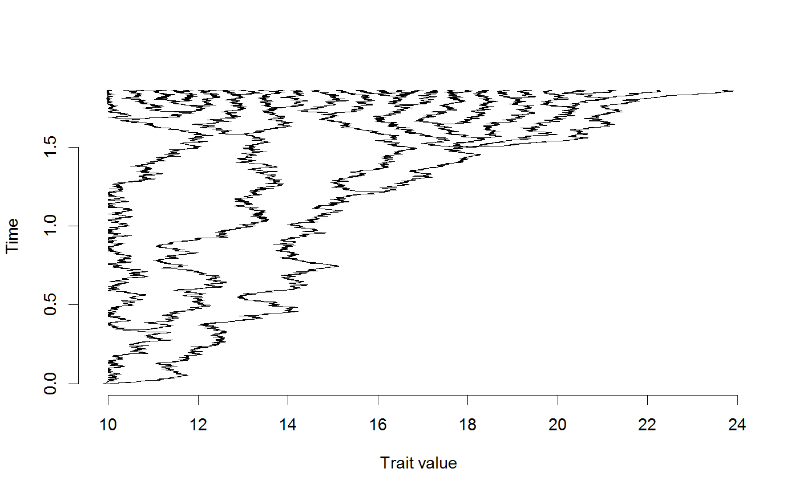

The doSimulation family of functions evolve continuous characters under a discrete time process.
These functions are mainly used as internal components, generating simulations
within ABC analyses using the doRun functions. See Note below.
doSimulation(phy = NULL, intrinsicFn, extrinsicFn, startingValues, intrinsicValues, extrinsicValues, generation.time = 1000, TreeYears = max(branching.times(phy)) * 1e+06, timeStep = NULL, saveHistory = FALSE, saveRealParams = FALSE, jobName = "", taxon.df = NULL) doSimulationForPlotting(phy = NULL, intrinsicFn, extrinsicFn, startingValues, intrinsicValues, extrinsicValues, generation.time = 1000, TreeYears = max(branching.times(phy)) * 1e+06, timeStep = NULL, plot = FALSE, savePlot = FALSE, saveHistory = FALSE, saveRealParams = FALSE, jobName = "", taxon.df = NULL) doSimulationWithPossibleExtinction(phy = NULL, intrinsicFn, extrinsicFn, startingValues, intrinsicValues, extrinsicValues, generation.time = 1000, TreeYears = max(branching.times(phy)) * 1e+06, timeStep = NULL, saveHistory = FALSE, saveRealParams = FALSE, jobName = "", maxAttempts = 100, returnAll = FALSE, verbose = FALSE, reject.NaN = TRUE, taxon.df = NULL, checkTimeStep = TRUE)
| phy | A phylogenetic tree, in package |
|---|---|
| intrinsicFn | Name of (previously-defined) function that governs how traits evolve within a lineage, regardless of the trait values of other taxa. |
| extrinsicFn | Name of (previously-defined) function that governs how traits evolve within a lineage, based on their own ('internal') trait vlaue and the trait values of other taxa. |
| startingValues | State at the root. |
| intrinsicValues | Vector of values corresponding to the parameters of the intrinsic model. |
| extrinsicValues | Vector of values corresponding to the parameters of the extrinsic model. |
| timeStep | This value corresponds to the number of discrete evolutionary events ('generations')
simulated per time-unit along branches. Typically |
| saveHistory | If |
| saveRealParams | Saves |
| jobName | Optional name for the job. |
| taxon.df | A data.frame containing data on nodes (both tips and internal nodes) output by various internal functions.
Can be supplied as input to spead up repeated calculations, but by default is
|
| plot | Will create a new interactive window that plots character values throughout the history of the tree. |
| savePlot | Saves the character tree using |
| maxAttempts | How many attempts should be tried if a run produces an |
| returnAll | If |
| verbose | If |
| reject.NaN | If |
| checkTimeStep | If |
If returnAll = FALSE (the default), this function returns a data frame of species character (tip)
values in the tree, with column headings taxonid (representing the index for the corresponding tip label
the most recent divergence event for that lineage), and statesmatrix (the simulated trait data).
If returnAll = TRUE, the raw data.frame from the simulation will instead be returned.
When saveHistory is TRUE, processor time will increase quite a bit.
SaveRealParams is useful for tracking the real true values if simulating
data to test the performance of ABC analyses. It is not useful for ABC analyses of empirical data.
The simulateWithPriors functions are effectively the engine that powers the doRun
functions, while the doSimulation functions are the pistons within the simulateWithPriors engine.
In general, most users will just drive the car - they will just use doRun, but some users may
want to use simulateWithPriors or doSimulation functions to do various simulations.
tree<-rcoal(30) #Simple Brownian motion char<-doSimulation( phy=tree, intrinsicFn=brownianIntrinsic, extrinsicFn=nullExtrinsic, startingValues=c(10), #root state intrinsicValues=c(0.01), extrinsicValues=c(0), saveHistory=FALSE) #Character displacement model with minimum bound char<-doSimulation( phy=tree, intrinsicFn=boundaryMinIntrinsic, extrinsicFn=ExponentiallyDecayingPushExtrinsic, startingValues=c(10), #root state intrinsicValues=c(0.05, 10, 0.01), extrinsicValues=c(0, .1, .25), saveHistory=FALSE) #Simple Brownian motion char<-doSimulationForPlotting( phy=tree, intrinsicFn=brownianIntrinsic, extrinsicFn=nullExtrinsic, startingValues=c(10), #root state intrinsicValues=c(0.01), extrinsicValues=c(0), plot=FALSE, saveHistory=FALSE) #Character displacement model with minimum bound char<-doSimulationForPlotting( phy=tree, intrinsicFn=boundaryMinIntrinsic, extrinsicFn=ExponentiallyDecayingPushExtrinsic, startingValues=c(10), #root state intrinsicValues=c(0.05, 10, 0.01), extrinsicValues=c(0, .1, .25), plot=TRUE, saveHistory=FALSE)# with extinction #Simple Brownian motion char<-doSimulationWithPossibleExtinction( phy=tree, intrinsicFn=brownianIntrinsic, extrinsicFn=nullExtrinsic, startingValues=c(10), #root state intrinsicValues=c(0.01), extrinsicValues=c(0), saveHistory=FALSE)#> Warning: You have only 9 timeSteps on the shortest branch in this dataset but should probably have a lot more if you expect change on this branch. Please consider decreasing timeStep to no more than 1e-04